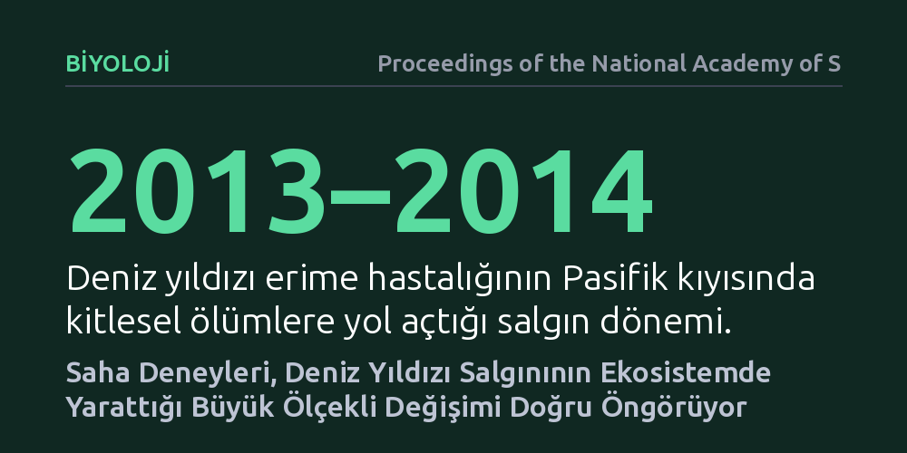

BIYOLOJI · Proceedings of the National Academy of Sciences · 2026-10-24
Araştırmacılar, 2013–2014 deniz yıldızı erime hastalığı salgınının kıyı ekosistemine etkilerini geçmişte yapılan küçük ölçekli tür çıkarma deneylerinin öngörüp öngöremediğini araştırdı. Bulgular, yerel saha deneylerinin kilit taşı bir avcının kitlesel yok oluşunun ekosistem genelindeki yayılma etkilerini coğrafi ölçekte de başarıyla tahmin ettiğini gösterdi.
Küçük kıyı parsellerinde yapılan yerel ekoloji deneylerinin, kıta ölçeğindeki kitlesel hastalık krizlerinin sonuçlarını öngörmede güvenilir bir rehber olduğunu gösterir.

Ekoloji biliminde uzun yıllardır tartışılan en kritik sorulardan biri, birkaç metrekarelik kaya havuzlarında veya çitlerle çevrili küçük parsellerde yürütülen deneylerin, yüzlerce kilometrelik doğal ekosistemlerin kaderini doğru öngörüp öngöremeyeceğidir. Laboratuvar koşullarında ya da sınırlı alanlarda gözlemlenen tür etkileşimlerinin, gerçek dünyanın karmaşık ve değişken doğasında aynı şekilde işleyip işlemediğini doğrulamak oldukça zordur. Bu durum, çevre koruma stratejilerinin ve tür yönetimi kararlarının ne kadar sağlam temellere dayandığını doğrudan etkiler.
2013 ve 2014 yıllarında Kuzey Amerika'nın Pasifik kıyılarında ortaya çıkan 'deniz yıldızı erime hastalığı', bu köklü soruyu test etmek için beklenmedik bir doğal zemin oluşturdu. Kıyı ekosistemlerinin kilit taşı avcısı konumundaki deniz yıldızlarının kitlesel ölümü, ekologların geçmişte küçük parsellerde yürüttüğü avcı uzaklaştırma deneylerinin kıtasal boyuttaki bir salgın felaketini tahmin etmede ne kadar başarılı olduğunu sınama imkânı verdi.
Araştırmacılar, sorunun yanıtını bulmak için uzun yıllara dayanan iki temel veri setini bir araya getirdi. Bir yanda, kayalık gelgit bölgelerinde geçmişte yapılan ve deniz yıldızlarının ortamdan fiziksel olarak uzaklaştırıldığı klasik saha deneyleri vardı. Diğer yanda ise 2013–2014 salgını öncesi ve sonrasında binlerce kilometrelik kıyı şeridi boyunca düzenli olarak kaydedilen uzun dönemli tür izleme verileri bulunuyordu.
Bilim insanları, mikroskobik bir patojenin yol açtığı doğal kitlesel yok oluşun kıyı topluluklarında yarattığı değişimleri, küçük ölçekli deneylerin ortaya koyduğu teorik beklentilerle kıyasladı. Bu yöntem sayesinde, ekosistemin en tepesindeki avcının patojen kaynaklı çöküşünün, alt basamaklardaki türlerin bolluğuna nasıl yansıdığı ölçekler arası istatistiksel modellerle incelendi.
Araştırmanın sonuçları, küçük ölçekli saha deneylerinin ekolojik tahmin konusunda şaşırtıcı derecede yüksek bir doğruluk payına sahip olduğunu ortaya koydu. Deniz yıldızlarını yok eden salgın, onlarca yıl önce küçük kayalık parsellerde yapılan deneylerde gözlemlenen ekolojik basamak etkilerini kıta ölçeğinde neredeyse aynı örüntüyle tekrarladı.
Baskın avcı olan deniz yıldızlarının ortadan kalkmasıyla birlikte, ana avları olan midyeler hızla çoğalarak kayalık zeminleri istila etti ve diğer birçok kabuklu ve alg türünün yaşam alanını daralttı. Böylece kilit taşı bir avcıyı vuran patojenin, tüm topluluk yapısını temelden dönüştürdüğü ve küçük deneylerin bu büyük ölçekli yıkımı eksiksiz öngörebildiği net biçimde kanıtlandı.
Elde edilen bulgular, bulaşıcı hastalıkların yalnızca insanları veya evcil hayvanları etkileyen tehditler olmadığını, vahşi doğada ekosistemlerin dengesini kuran ya da bozan en temel aktörlerden biri olduğunu gösteriyor. Bir ekosistemin mimarı olan kilit taşı bir canlıyı hedef alan hastalık etkenleri, besin ağında domino taşı etkisi yaratarak biyolojik çeşitliliğin dağılımını kökten değiştirebiliyor.
Bu durum, iklim değişikliği ve salgın hastalıklarla sarsılan küresel ekosistemleri yönetmek için umut verici bir zemin sunuyor. Bilim insanlarının küçük parsellerde yürüttüğü mütevazı saha çalışmalarının, geniş coğrafyalarda yaşanabilecek ekolojik çöküşleri tahmin etmede güvenilir birer erken uyarı aracı olarak kullanılabileceği kesinleşmiş oldu.